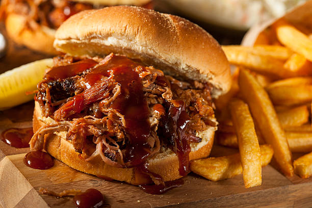

Pulled Pork Burger recipe

Description
Pulled pork is an American barbecue dish,
more specifically a dish of the Southern U.S.,
based on shredded barbecued pork shoulder.
It is typically slow-smoked over wood (usually outdoors);
indoor variations use a slow cooker.
The meat is then shredded manually and mixed with a sauce.
It may be served on bread as a sandwich, or eaten on its own.
In combination with spare ribs and brisket it is considered a part of the Texas Holy Trinity of Barbecue.>
Ingredients
- 4 tbs burger sauce
- 350g kaleslaw kit
- 4 brioche gourmet burger buns
- Simply heat pulled pork smokey BBQ
Steps
- Prepare pulled pork as per packet instructions. Pull meat apart and mix through sauce sachet.
- Pull apart brioche buns into halves and spread top and bottom of each bun with 1 tsb of burger sauce.
- Place pork and some of the kaleslaw into each bun. With remaining kaleslaw, mix through packet dressing and serve on the side.